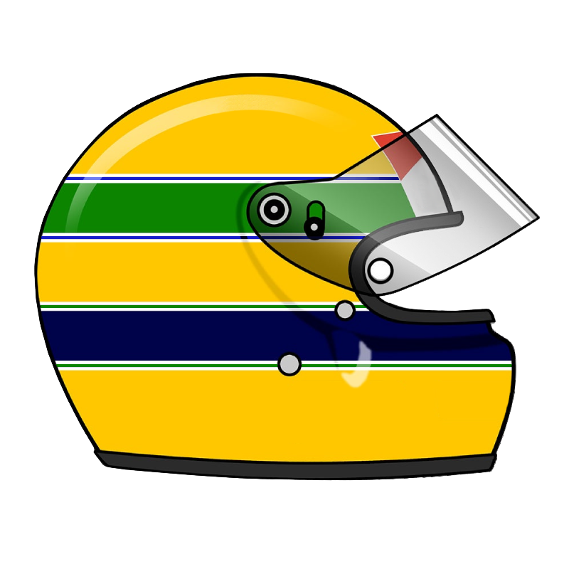

<!DOCTYPE html>
<html lang="en">
<head>
    <meta charset="UTF-8">
    <meta name="viewport" content="width=device-width, initial-scale=1.0">
    <title>Conquistas</title>
    <link rel="stylesheet" href="styles/style_conquistas.css"
<body>
    <header class="cabecalho">
        <a class="cabecalho-home-imagem" href="index.html"></a>
    </header>
    <main class="conteudo-principal">
        <section class="conteudo-principal-main">
                <h4 class="conteudo-principal-main-titulo" id="subtitulo">Antes da F1</h4>
                <ul class="lista">
                    <li class="lista-atributo"><strong>Bicampeão Paulista de Kart</strong> (1974, 1976)</li>
                    <li class="lista-atributo"><strong>Tricampeão Brasileiro de Kart</strong> (1978, 1979, 1980)</li>
                    <li class="lista-atributo"><strong>Bicampeão Sulamericano de Kart</strong> (1977, 1980)</li>
                    <li class="lista-atributo"><strong>Campeão de Fórmula Ford 1600</strong> (1981)</li>
                    <li class="lista-atributo"><strong>Campeão de Fórmula Ford 2000</strong> (1982)</li>
                    <li class="lista-atributo"><strong>Campeão de Fórmula 3 Britânica</strong> (1983)</li>
                </ul>
                <h4 class="conteudo-principal-main-titulo">Fórmula 1</h4>
                <ul class="lista">
                    <li class="lista-atributo"><strong>Tricampeão</strong> (1988, 1990, 1991.)</li>
                    <li class="lista-atributo"><strong>Vitórias:</strong> 41</li>
                    <li class="lista-atributo"><strong>Pódios:</strong> 80</li>
                    <li class="lista-atributo"><strong>Pole Positions:</strong> 65</li>
                    <li class="lista-atributo"><strong>Voltas mais rápidas:</strong> 19</li>
                </ul>
        </section>
    </main>
</body>
<footer></footer>
</html>